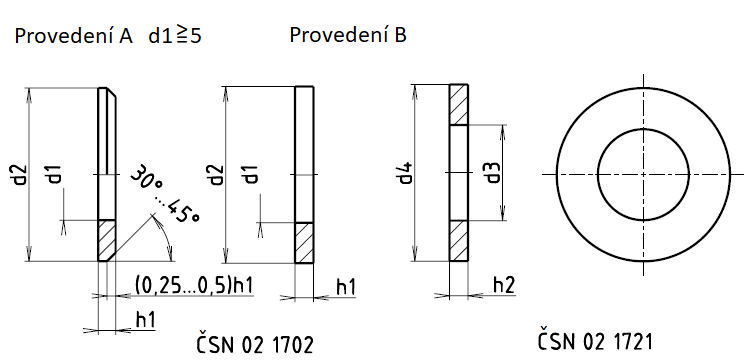

Příklad označení ocelové chromované podložky pro šroub M12, provedení A:
PODLOŽKA ČSN 02 1702.18–13
Příklad označení ocelové chromované podložky pro šroub M12, provedení B:
PODLOŽKA B ČSN 02 1702.18–13
Příklad označení hrubé ocelové chromované podložky pro šroub M12, provedení B:
PODLOŽKA ČSN 02 1721.18–13,5
1 První doplňková číslice z číslem ČSN 02 1702 označuje materiál podložky
1 ocel 11 423 nebo jiná ocel s obdobnými mechanickými vlastnostmi
2 Slitina Al-Cu-Mg 42 4201
3 měď 42 3001
4 bronz 42 3016
5 mosaz 42 3213
6 olovo
7 lesklá lepenka ČSN 50 3177.1
8 tvrzený papír ČSN 64 4111.2
9 podle zvláštního ujednání
2 První doplňková číslice za číslen ČSN 02 1721 označuje materiál podložky: 1 ocel 11 423.
3 Druhá doplňková číslice označuje úpravu povrchu podložky:
0 bez úpravy povrchu
2 černění
3 fosfátování
4 kadmiování
5 zinkování
6 niklování
7 mosazení
8 chromování
9 dle zvláštního ujednání
| Pro šroub d |
ČSN 02 1702 | ČSN 02 1721 | ||||||
|---|---|---|---|---|---|---|---|---|
| d1 | d2 | h1 | Hmotnost ocelové [g] |
d3 | d4 | h2 | Hmotnost ocelové [g] |
|
| M1,6 | 1,7+0,14 | 4 -0,3 | 0,3 ±0,05 | 0,024 | – | – | – | – |
| M2 | 2,2+0,14 | 5 -0,3 | 0,3 ±0,05 | 0,037 | – | – | – | – |
| M2,5 | 2,7+0,14 | 6 -0,3 | 0,5 ±0,05 | 0,089 | – | – | – | – |
| M3 | 3,2+0,18 | 7 -0,36 | 0,5 ±0,05 | 0,119 | – | – | – | – |
| M3,5 | 3,7+0,18 | 8 -0,36 | 0,5 ±0,05 | 0,155 | – | – | – | – |
| M4 | 4,3+0,18 | 8 -0,36 | 0,5 ±0,05 | 0,155 | – | – | – | – |
| M5 | 5,3+0,18 | 10 -0,36 | 0,8 ±0,1 | 0,308 | 5,5+0,3 | 10 -0,9 | 1 ±0,2 | 0,430 |
| M6 | 6,4+0,22 | 12 -0,43 | 1,6 ±0,2 | 1,02 | 6,6+0,36 | 12 -1,1 | 1,6 ±0,3 | 0,992 |
| M7 | 7,4+0,22 | 14 -0,43 | 1,6 ±0,2 | 1,39 | 7,6+0,36 | 14 -1,1 | 1,6 ±0,3 | 1,36 |
| M8 | 8,4+0,22 | 16 -0,43 | 1,6 ±0,2 | 1,82 | 9+0,36 | 16 -1,1 | 1,6 ±0,3 | 1,73 |
| M10 | 10,5+0,27 | 20 -0,52 | 2 ±0,2 | 3,57 | 11,0+0,43 | 20 -1,3 | 2 ±0,3 | 3,44 |
| M12 | 13+0,27 | 24 -0,52 | 2,5 ±0,2 | 6,27 | 13,5+0,43 | 24 -1,3 | 2,5 ±0,3 | 6,07 |
| M14 | 15+0,27 | 28 -0,52 | 2,5 ±0,2 | 8,61 | 15,5+0,43 | 28 -1,3 | 2,5 ±0,3 | 8,37 |
| M16 | 17+0,27 | 30 -0,52 | 3 ±0,3 | 11,3 | 17,5+0,43 | 30 -1,3 | 3 ±0,6 | 10,9 |
| M18 | 19+0,33 | 34 -0,62 | 3 ±0,3 | 14,7 | 20+0,52 | 34 -1,6 | 3 ±0,6 | 14,0 |
| M20 | 21+0,33 | 37 -0,62 | 3 ±0,3 | 17,2 | 22+0,52 | 37 -1,6 | 3 ±0,6 | 16,4 |
| M22 | 23+0,33 | 39 -0,62 | 3 ±0,3 | 18,3 | 24+0,52 | 39 -1,6 | 3 ±0,6 | 17,6 |
| M24 | 25+0,33 | 44 -0,62 | 4 ±0,3 | 32,3 | 26+0,52 | 44 -1,6 | 4 ±0,6 | 31,1 |
| M27 | 28+0,33 | 50 -0,62 | 4 ±0,3 | 42,3 | 30+0,52 | 50 -1,6 | 4 ±0,6 | 39,4 |
| M30 | 31+0,39 | 56 -0,74 | 4 ±0,3 | 53,6 | 33+0,62 | 56 -1,9 | 4 ±0,6 | 50,5 |
| M33 | 34+0,62 | 60 -0,74 | 5 ±0,4 | 75,3 | 36+1,0 | 60 -1,9 | 5 ±0,6 | 71,0 |
| M36 | 37+0,62 | 65 -1,2 | 5 ±0,4 | 92,1 | 39+1,0 | 66 -1,9 | 5 ±1,0 | 87,4 |
| M39 | 40+0,62 | 72 -1,2 | 6 ±0,6 | 133 | 42+1,0 | 72 -1,9 | 6 ±1,0 | 126 |
| M42 | 43+0,62 | 78 -1,2 | 7 ±1 | 183 | 45+1,0 | 78 -1,9 | 7 ±1,2 | 175 |
| M45 | 46+0,62 | 85 -1,4 | 7 ±1 | 220 | 48+1,0 | 85 -2,2 | 7 ±1,2 | 212 |
| M48 | 50+0,62 | 92 -1,4 | 8 ±1 | 294 | 52+1,2 | 92 -2,2 | 8 ±1,2 | 284 |
| M52 | 54+0,74 | 98 -1,4 | 8 ±1 | 330 | 56+1,2 | 98 -2,2 | 8 ±1,2 | 319 |
| M56 | 58+0,74 | 105 -1,4 | 9 ±1 | 425 | 62+1,2 | 105 -2,2 | 9 ±1,2 | 397 |
| M60 | 62+0,74 | 110 -1,4 | 9 ±1 | 458 | 66+1,2 | 110 -2,2 | 9 ±1,2 | 430 |
| M64 | 66+0,74 | 115 -1,4 | 9 ±1 | 492 | 70+1,2 | 115 -2,2 | 9 ±1,2 | 462 |
| M68 | 70+0,74 | 120 -1,4 | 10 ±1 | 586 | – | – | – | – |
| M72 | 74+0,74 | 125 -1,6 | 10 ±1 | 628 | 78+1,2 | 125 -2,9 | 10 ±1,2 | 588 |
| M76 | 78+0,74 | 135 -1,4 | 10 ±1 | 748 | – | – | – | – |
| M80 | 82+0,87 | 140 -1,6 | 12 ±1,2 | 953 | 86+1,4 | 140 -2,9 | 12 ±1,6 | 903 |
| M90 | 93+0,87 | 160 -1,6 | 12 ±1,2 | 1254 | 96+1,4 | 160 -2,9 | 12 ±1,6 | 1212 |
| M100 | 104+0,87 | 175 -1,6 | 14 ±1,2 | 1709 | 107+1,4 | 175 -2,9 | 14 ±1,6 | 1655 |
| M110 | 114+0,87 | 185 -1,85 | 14 ±1,2 | 1831 | 117+1,4 | 185 -3,2 | 14 ±1,6 | 1772 |
| M120 | 124+1 | 210 -1,85 | 16 ±1,2 | 2832 | 127+1,6 | 210 -3,2 | 16 ±1,6 | 2758 |
| M125 | 129+1 | 220 -1,85 | 16 ±1,2 | 3131 | – | – | >– | – |
| M130 | 134+1 | 230 -1,85 | 16 ±1,2 | 3445 | – | – | >– | – |
| M140 | 144+1 | 240 -1,85 | 18 ±1,2 | 4089 | – | – | >– | – |
| M150 | 155+1 | 250 -1,85 | 18 ±1,2 | 4268 | – | – | >– | – |
| M160 | 165+1 | 265 -2,1 | 18 ±1,2 | 4770 | – | – | >– | – |